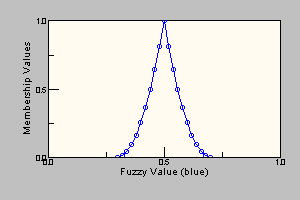
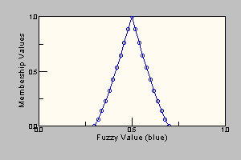
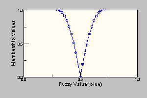

nrc.fuzzy
Class ModifierFunction
java.lang.Object
|
+--nrc.fuzzy.ModifierFunction
- All Implemented Interfaces:
- java.io.Serializable
- Direct Known Subclasses:
- AboveModifier, BelowModifier, ExtremelyModifier, IntensifyModifier, MoreorlessModifier, NormModifier, NotModifier, PlusModifier, SlightlyModifier, SomewhatModifier, VeryModifier
- public abstract class ModifierFunction
- extends java.lang.Object
- implements java.io.Serializable
The abstract ModifierFunction class along with the concrete
implementations of this class encapsulate the set of Modifiers (or Hedges)
available to operate on fuzzy values or fuzzy sets. Each concrete
modifier function class provides two 'call' methods that
accept as a parameter either a FuzzyValue or a FuzzySet. The method
creates a new FuzzyValue or FuzzySet who's value represents the application of the
linguistic modifier to the fuzzy set.
Many of the modifiers are applied by raising the membership values of the
fuzzy set points to a certain exponent. For example, the modifier very
is implemented in this manner using the exponent 2. However, consider
the case where the fuzzy set being modified consists of
{0.0/1 1.0/2 0.0/3}. In this case, the membership values, at x=1, x=2 and x=3, do
not change, regardless of the value of the exponent.
However, if an additional point is inserted in this fuzzy set so that it now
consists of {0.0/1 0.5/2.5 1.0/2 0.0/3}, and the modifier very is
applied, the point that was originally 0.5/2.5 will now become 0.25/2.5. If we
insert other additional points at arbitrary x values along the FuzzyValue, it will
be found that unless the membership value of these arbitrary points is 1.0 or 0.0, the
membership value will change as a result of the application of the exponent.
Because the representation of the membership function is a set of points that are
joined by straight lines, it may be necessary
to add additional points to the fuzzy set to enhance the
precision to the resulting fuzzy set.
The points added to the fuzzy set before the application of an
exponential modifier, and hence the precision of the result, can be controlled
by the user in three different ways. The user can specify:
- the delta x between additional points by using the
setDeltaXPrecision method. For example, if the user specifies
a delta x precision of 0.1, a new point will be added at approximately
every 0.1 x value increment between existing points.
- the delta y between additional points by using the
setDeltaYPrecision method. Similar to delta x, a new
point will be added per specified y increment.
- the number of points, in total, to be in the final FuzzyValue
by using the
setNumberOfPointsPrecision method.
It is interesting to note that these precisions are, in fact, imprecise
themselves. To accomodate each individual FuzzyValue and try to add points
with as even a spacing as possible, a specified delta x of 0.1 might be
functionally applied as 0.9555, or a specified 20 additional points to add
might be changed to 22 by the program.
Although the methods setDeltaXPrecision, setDeltaYPrecision,
and setNumberOfPointsPrecision determine the spacing for each of
the 3 possible fuzzy expanding techniques, only one of them is used at any time.
Which of these techniques is used is controlled by the method
setPrecisionControlType. It takes as an argument one of the following
constant values: DELTA_X, DELTA_Y, or NUMBER_OF_POINTS.
The following is a visual guide to the built-in (system supplied)
modifiers available to users.
A Visual Guide To Modifiers
| Modifiers |
Visual Representation |
|
Unmodified:
- this FuzzyValue has not yet been modified. It will be the
FuzzyValue to which the modifiers are applied for all of the
following examples except 'norm'.
|

|
|
Not:
- the
NOT modifier returns the complement of the
FuzzyValue passed as its argument.
|

|
|
Norm:
- the
NORM modifier returns the normalized FuzzyValue.
Normalizing the FuzzyValue refers to scaling it so that at least
one point on the FuzzyValue has a membership value of 1.0.
FuzzyValue passed as its argument.
|
Before Normalization
 After Normalization
After Normalization

|
|
More_Or_Less:
- the
MORE_OR_LESS modifier returns the expanded
FuzzyValue passed as its argument, having raised all the
membership values of the FuzzyValue by a factor of 1/3.
|

|
|
Somewhat:
- the
SOMEWHAT modifier returns the expanded
FuzzyValue passed as its argument, having raised all the
membership values of the FuzzyValue by a factor of 1/2.
|

|
|
Plus:
- the
PLUS modifier returns the expanded
FuzzyValue passed as its argument, having raised all the
membership values of the FuzzyValue by a factor of 1.25.
|

|
|
Very:
- the
VERY modifier returns the expanded
FuzzyValue passed as its argument, having raised all the
membership values of the FuzzyValue by a factor of 2.
|

|
|
Extremely:
- the
EXTREMELY modifier returns the expanded
FuzzyValue passed as its argument, having raised all the
membership values of the FuzzyValue by a factor of 3.
|

|
|
Slightly:
- the
SLIGHTLY modifier returns the expanded
FuzzyValue A passed as its argument, having performed
the following modifications on it:
- intensify [ norm (plus A AND not very A) ]
|

|
Consider the partial breakdown, shown below, of this
example. On the left, directly below, is shown this
FuzzyValue after applying the plus modifier.
On the right is this FuzzyValue after applying both the
not and the very modifiers.
Below these is depicted plus FuzzyValue AND not
very FuzzyValue, showing the portion of the FuzzyValue
that is selected which intuitively matches our linguistic
understanding of the word "slightly".
|
| PLUS |
NOT VERY |
|


|
Now, put them together.
PLUS FuzzyValue AND NOT VERY FuzzyValue
|

|
|
Intensify:
- the
INTENSIFY modifier returns the expanded
FuzzyValue passed as its argument, having having performed
the following modifications on it:
- if (0.0 <= y <= 0.5), y = 2*y2
- if (0.5 < y <= 1.0), y = 1 - 2*(1-y)2
The has the effect of emphasizing the sections of the FuzzyValue
that have a membership value greater than 0.5, and understating
any sections of the FuzzyValue with a membership value less than
or equal to 0.5.
|

|
|
Above:
- the
ABOVE modifier identifies the first x value
at which the maximum value is reached. All membership values
below this point are set to zero and all membership values above
this value are set to 1-y. For convex fuzzy sets this gives
an intuitive result.
|

|
|
Below:
- the
BELOW modifier identifies the first x value
at which the maximum value is reached. All membership values
above this point are set to zero and all membership values below
this value are set to 1-y. For convex fuzzy sets this gives
an intuitive result.
|

|
Each individual fuzzy modifier is created as a subclass of the
ModifierFunction class. If created according to the instructions provided
these fuzzy modifer classes when Constructed will automatically call the
Modifiers.add method to add themselves to the list of available modifiers.
So the preferred way to add new modifiers is:
- Create the modifier class
public class VeryModifier extends ModifierFunction
{
public VeryModifier() // use a default name for the modifier
{
// required to set the name of the modifier
// and add to list in Modifiers class
super( "very" );
}
public VeryModifier(String s) // use a supplied name for the modifier
{
// required to set the name of the modifier
// and add to list in Modifiers class
super( s );
}
public FuzzyValue call(FuzzyValue fv)
{
FuzzyValue fvNew = null;
// executes the 'call' method below for FuzzySet to do the modifier function
FuzzySet fs = call(fv.getFuzzySet());
try {
fvNew = new FuzzyValue(fv.getFuzzyVariable(), fs);
}
catch (XValueOutsideUODException e)
{ // we know that the modifers like 'very' do not expand the x value range
// of the fuzzy set so if get this exception there must be an internal error
System.err.println("Internal error in Modifier function '"+getName()+
"': " + e);
System.exit(100);
}
// must do this to set the linguistic expression for the new fuzzy value
fvNew.unaryModifyLinguisticExpression(getName(), fv.getLinguisticExpression());
return(fvNew);
}
public FuzzySet call(FuzzySet fs)
{ // the real work is done here -- on the fuzzy set
return(concentrateDilute(fs, 2.0));
}
}
- Create an instance of the new modifier class. This automatically
adds the class instance to the list of modifier functions maintained
by the Modifiers class.
- Once this has been done the modifier can be used directly by the user
myVeryMod = new VeryModifier("very");
...
aModifiedFuzzyValue = myVeryMod.call(aFuzzyValue);
OR
String mod = "very";
...
aModifiedFuzzyValue = Modifers.call(mod, aFuzzyValue);
The second form uses the Modifiers class to perform a 'variable' modifier method and
is used internally by the fuzzy package when creating fuzzy values or
fuzzy terms using 'linguistic expressions'.
For convenience an instance of each of the built-in (system supplied) modifiers is
created in the Modifiers class and a method is created for each one
allowing them to be accessed in a simpler fashion:
aModifiedFuzzyValue = Modifers.very(aFuzzyValue);
NOTE: all modifier names are case insensitive ('very' is the same as 'VERY')
- See Also:
Modifiers,
Serialized Form
|
Field Summary |
static int |
DELTA_X
A constant used in setting the precisionControlType so that
delta x spacing will be used when expanding fuzzy sets |
static int |
DELTA_Y
A constant used in setting the precisionControlType so that
delta y spacing will be used when expanding fuzzy sets |
protected static double |
deltaX
This class variable represents a delta x spacing to be used
in the expansion of the FuzzyValue/FuzzySet as required by
certain fuzzy modifier functions. |
protected static double |
deltaY
This class variable represents a delta y spacing to be used
in the expansion of the FuzzyValue/FuzzySet as required by
certain fuzzy modifier functions. |
static int |
NUMBER_OF_POINTS
A constant used in setting the precisionControlType so that
number of points setting will be used when expanding fuzzy sets |
protected static int |
numberOfPoints
This class variable represents the number of points to be used
in the expansion of the FuzzyValue/FuzzySet as required by
certain fuzzy modifier functions. |
protected static int |
precisionControlType
This class variable designates the type of precision control to be
used in the expansion of fuzzy sets. |
|
Constructor Summary |
ModifierFunction(java.lang.String name)
All Modifier Functions must have a String name that they are known by
so they can be used in linguistic expressions such as "very cold". |
|
Method Summary |
abstract nrc.fuzzy.FuzzySet |
call(nrc.fuzzy.FuzzySet fs)
A concrete implementation of a Modifier Function will need to supply
this method, since it will be called to perform the modifier operation
on the Fuzzy Set. |
abstract nrc.fuzzy.FuzzyValue |
call(nrc.fuzzy.FuzzyValue fv)
A concrete implementation of a Modifier Function will need to supply
this method, since it will be called to perform the modifier operation
on the Fuzzy Value. |
static nrc.fuzzy.FuzzySet |
concentrateDilute(nrc.fuzzy.FuzzySet a,
double power)
Returns a new FuzzySet object which represents the expansion of the FuzzySet
argument, with all the membership values raised to the specified power. |
static nrc.fuzzy.FuzzySet |
expandSet(nrc.fuzzy.FuzzySet a)
This method expands a fuzzy set to (possibly) include more points as
required for the implementation of certain fuzzy modifier functions. |
java.lang.String |
getName()
Retrieves the string name of the ModifierFunction. |
static void |
setDeltaXPrecision(double precision)
Sets the delta x precision value used for fuzzy set expansion. |
static void |
setDeltaYPrecision(double precision)
Sets the delta y precision value for fuzzy set expansion. |
static void |
setNumberOfPointsPrecision(int numPoints)
Sets the number of points used for FuzzyValue/FuzzySet expansion. |
static void |
setPrecisionControlType(int type)
Sets the type of precision control that will be used by the expandSet
method that expands the number of points in a fuzzy set. |
| Methods inherited from class java.lang.Object |
clone, equals, finalize, getClass, hashCode, notify, notifyAll, toString, wait, wait, wait |
deltaX
protected static double deltaX
- This class variable represents a delta x spacing to be used
in the expansion of the FuzzyValue/FuzzySet as required by
certain fuzzy modifier functions. The deltaX value is used
only when precisionControlType is set to DELTA_X.
The smaller the delta value, the greater the precision when
a fuzzy set is modified (i.e. more points will be generated
in the resulting fuzzy set).
- See Also:
expandSet(nrc.fuzzy.FuzzySet),
precisionControlType,
Modifiers
deltaY
protected static double deltaY
- This class variable represents a delta y spacing to be used
in the expansion of the FuzzyValue/FuzzySet as required by
certain fuzzy modifier functions. The deltaY value is used
only when precisionControlType is set to DELTA_Y.
The smaller the delta value, the greater the precision when
a fuzzy set is modified (i.e. more points will be generated
in the resulting fuzzy set).
- See Also:
expandSet(nrc.fuzzy.FuzzySet),
precisionControlType,
Modifiers
numberOfPoints
protected static int numberOfPoints
- This class variable represents the number of points to be used
in the expansion of the FuzzyValue/FuzzySet as required by
certain fuzzy modifier functions. The numberOfPoints value is used
only when precisionControlType is set to NUMBER_OF_POINTS.
The lager the number of points, the greater the precision when
a fuzzy set is modified (i.e. more points will be generated
in the resulting fuzzy set).
- See Also:
expandSet(nrc.fuzzy.FuzzySet),
precisionControlType,
Modifiers
precisionControlType
protected static int precisionControlType
- This class variable designates the type of precision control to be
used in the expansion of fuzzy sets. The values allowed are DELTA_X,
DELTA_Y, and NUMBER_OF_POINTS.
- See Also:
expandSet(nrc.fuzzy.FuzzySet),
Modifiers
DELTA_X
public static final int DELTA_X
- A constant used in setting the precisionControlType so that
delta x spacing will be used when expanding fuzzy sets
- See Also:
precisionControlType,
Constant Field Values
DELTA_Y
public static final int DELTA_Y
- A constant used in setting the precisionControlType so that
delta y spacing will be used when expanding fuzzy sets
- See Also:
precisionControlType,
Constant Field Values
NUMBER_OF_POINTS
public static final int NUMBER_OF_POINTS
- A constant used in setting the precisionControlType so that
number of points setting will be used when expanding fuzzy sets
- See Also:
precisionControlType,
Constant Field Values
ModifierFunction
public ModifierFunction(java.lang.String name)
- All Modifier Functions must have a String name that they are known by
so they can be used in linguistic expressions such as "very cold".
The concrete implementations of ModifierFucntion must supply a
constructor with a string name argument. Normally the constructor
will look like:
VeryModifier( String s )
{
super(s);
}
(/pre>
The super constructor will take care of recording the string name of
the modifier in the class and will also add the modifier to the list
(hash table) of modifiers in the Modifiers class.
- See Also:
Modifiers
setDeltaXPrecision
public static void setDeltaXPrecision(double precision)
- Sets the delta x precision value used for fuzzy set expansion. It is important to note
that setting the delta x precision value does not set the precision control
type. The default precision control type is DELTA_Y, therefore, to set
the delta x precision and have it applied by certain modifier functions (that use
expandSet for example), the
setPrecisionControlType method must also
be used.
- Parameters:
precision - the value of the desired precision for expanding FuzzyValues/FuzzySets.
For example, if this argument has the value
0.1, additional points will be added to the FuzzyValue at
x increments of approximately 0.1.- See Also:
expandSet(nrc.fuzzy.FuzzySet),
Modifiers,
precisionControlType
setDeltaYPrecision
public static void setDeltaYPrecision(double precision)
- Sets the delta y precision value for fuzzy set expansion. It is important to note
that setting the delta y precision does not set the precision control
type. The default precision control type is DELTA_Y, but, to be sure to set
the delta y precision and have it applied by certain modifier functions (that use
expandSet for example), the
setPrecisionControlType method should
be used.
- Parameters:
precision - the value of the desired precision for expanding FuzzyValues/FuzzySets.
For example, if this argument has the value
0.1, additional points will be added to the FuzzyValue/FuzzySet at
y increments of approximately 0.1.- See Also:
expandSet(nrc.fuzzy.FuzzySet),
Modifiers,
precisionControlType
setNumberOfPointsPrecision
public static void setNumberOfPointsPrecision(int numPoints)
- Sets the number of points used for FuzzyValue/FuzzySet expansion. It is important to note
that setting the number of points does not set the precision control
type. The default precision control type is DELTA_Y, therefore, to set
the number of points precision and have it applied by certain modifier functions (that use
expandSet for example), the
setPrecisionControlType method must also
be used.
- Parameters:
numPoints - the desired integer number of points to be added to each
FuzzyValue. Must be > 4.- See Also:
expandSet(nrc.fuzzy.FuzzySet),
Modifiers,
precisionControlType
setPrecisionControlType
public static void setPrecisionControlType(int type)
- Sets the type of precision control that will be used by the expandSet
method that expands the number of points in a fuzzy set.
See the class description for a complete justification
as to why expansion of the set and precision control are required,
and for an explanation of the three different types of precision
control. The argument for this method must be one of the following
three constants: DELTA_X, DELTA_Y, NUMBER_OF_POINTS.
Note that setting the individual precisions does not affect
which precision is used in expansion calculations. Only this
method designates which type of precision control will be used.
- Parameters:
type - the precision control type desired for the expansion of the
FuzzyValue, if expansion is required. This argument must
be one of the following constants: DELTA_X, DELTA_Y,
NUMBER_OF_POINTS.- See Also:
expandSet(nrc.fuzzy.FuzzySet),
Modifiers,
precisionControlType
getName
public final java.lang.String getName()
- Retrieves the string name of the ModifierFunction.
call
public abstract nrc.fuzzy.FuzzyValue call(nrc.fuzzy.FuzzyValue fv)
- A concrete implementation of a Modifier Function will need to supply
this method, since it will be called to perform the modifier operation
on the Fuzzy Value.
- Parameters:
fv - the fuzzy value to be modified
call
public abstract nrc.fuzzy.FuzzySet call(nrc.fuzzy.FuzzySet fs)
- A concrete implementation of a Modifier Function will need to supply
this method, since it will be called to perform the modifier operation
on the Fuzzy Set.
- Parameters:
fs - the fuzzy set to be modified
expandSet
public static nrc.fuzzy.FuzzySet expandSet(nrc.fuzzy.FuzzySet a)
- This method expands a fuzzy set to (possibly) include more points as
required for the implementation of certain fuzzy modifier functions.
The expansion is controlled by the setting of precisionControlType.
- Parameters:
a - the fuzzy set to be expanded.
- Returns:
- the expanded fuzzy set
- See Also:
Modifiers,
precisionControlType,
setPrecisionControlType(int)
concentrateDilute
public static nrc.fuzzy.FuzzySet concentrateDilute(nrc.fuzzy.FuzzySet a,
double power)
- Returns a new FuzzySet object which represents the expansion of the FuzzySet
argument, with all the membership values raised to the specified power.
- Parameters:
a - the FuzzySet to expand and either concentrate or dilute
via exponential methodspower - the power (exponent) to which the membership values are raised
- Returns:
- a new FuzzySet object representing the concentration or dilution of the
FuzzySet argument by the exponent argument.